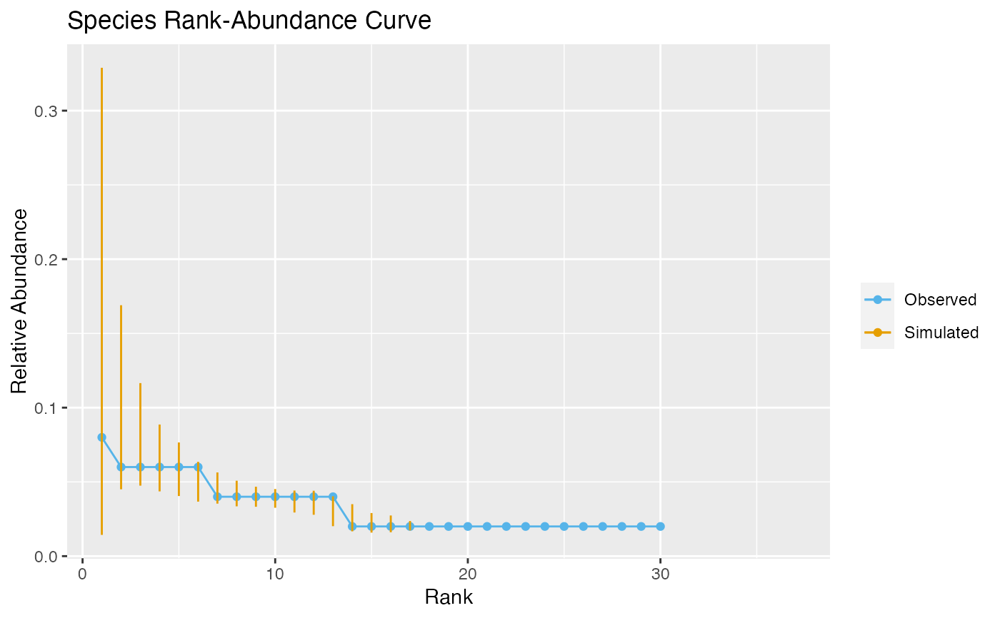

prdch4coalesc.RdThis function performs posterior predicitve checks assessing a model's prediction performance of either user defined summary statistics, functional diversity (intrspecific trait distributions, moments of the trait distribution, Enquist et al., 2015) or species rank-abundance plots
prdch4coalesc(com.obs, pool, filt, params, stats = "abund", f.stats = NULL, estim = NULL, nval = 100, progress = TRUE)
| com.obs | a data.frame of observed individuals, the first column should contain individual labels, the second the names of the species and the third species trait values - should be the same as provided for the ABC analysis in |
|---|---|
| pool | a data.frame containing the regional pool of species providing immigrants to the local community. It should include the label of individual on first column, its species on second column and their trait values in the third column as in |
| filt | the inferred environmental filtering function. If |
| params | the posterior distribution resulting from the ABC analysis, should be a data.frame containing each parameter distribution as columns (posterior distribution of the migration rate parameter ( |
| stats | statistics used for the predictive checks:
|
| f.stats | the user-defined function computing the summary statistics to be used in the predictive checks when |
| estim | an estimator of the posterior distribution - can be either |
| nval | the number of simulations to be run for computing predictive checks. If |
| progress | whether to display progress bar (default is |
probabilities that the observed user-defined statistics are greater than
the same statistics simulated by the model (if stats="custom")
probabilities that the first four moments of the observed trait distribution are greater than those simulated by the model (if stats="moments")
the names of the under-represented species by the model evaluated by comparing observed relative abundances of species to those simulated by the model (if stats="abund")
the names of over-represented species by the model evaluated by comparing observed relative abundances of species to those simulated by the model (if stats="abund")
Enquist, Brian J., et al. "Scaling from traits to ecosystems: developing a general trait driver theory via integrating trait-based and metabolic scaling theories." Advances in ecological research. Vol. 52. Academic Press, 2015. 249-318.
Csillery, Katalin, et al. "Approximate Bayesian computation (ABC) in practice." Trends in ecology & evolution 25.7 (2010): 410-418.
E. Barthelemy
pool <- data.frame(ind = 1:1000, sp = as.character(rep(1:50), each = 10), trait = runif(1000), stringsAsFactors = FALSE) com.obs <- pool[sample(nrow(pool), 50),] f.stats <- function(com){ tab <- table(com[,2]) as.vector(t(sapply(0:3, function(x) hillR::hill_taxa(tab, q=x)))) } filt <- function(x, par) exp(-(x - par[[1]])^2/(2*par[[2]]^2)) stats <- c("custom","abund", "moments") params <- data.frame(par1 = runif(100,0,1), par2 = runif(100, .5, .9), par3 = runif(100,0,1)) checks <- prdch4coalesc(com.obs, pool, filt, params, stats, f.stats)#> | | | 0% | |= | 1% | |= | 2% | |== | 3% | |=== | 4% | |==== | 5% | |==== | 6% | |===== | 7% | |====== | 8% | |====== | 9% | |======= | 10% | |======== | 11% | |======== | 12% | |========= | 13% | |========== | 14% | |========== | 15% | |=========== | 16% | |============ | 17% | |============= | 18% | |============= | 19% | |============== | 20% | |=============== | 21% | |=============== | 22% | |================ | 23% | |================= | 24% | |================== | 25% | |================== | 26% | |=================== | 27% | |==================== | 28% | |==================== | 29% | |===================== | 30% | |====================== | 31% | |====================== | 32% | |======================= | 33% | |======================== | 34% | |======================== | 35% | |========================= | 36% | |========================== | 37% | |=========================== | 38% | |=========================== | 39% | |============================ | 40% | |============================= | 41% | |============================= | 42% | |============================== | 43% | |=============================== | 44% | |================================ | 45% | |================================ | 46% | |================================= | 47% | |================================== | 48% | |================================== | 49% | |=================================== | 50% | |==================================== | 51% | |==================================== | 52% | |===================================== | 53% | |====================================== | 54% | |====================================== | 55% | |======================================= | 56% | |======================================== | 57% | |========================================= | 58% | |========================================= | 59% | |========================================== | 60% | |=========================================== | 61% | |=========================================== | 62% | |============================================ | 63% | |============================================= | 64% | |============================================== | 65% | |============================================== | 66% | |=============================================== | 67% | |================================================ | 68% | |================================================ | 69% | |================================================= | 70% | |================================================== | 71% | |================================================== | 72% | |=================================================== | 73% | |==================================================== | 74% | |==================================================== | 75% | |===================================================== | 76% | |====================================================== | 77% | |======================================================= | 78% | |======================================================= | 79% | |======================================================== | 80% | |========================================================= | 81% | |========================================================= | 82% | |========================================================== | 83% | |=========================================================== | 84% | |============================================================ | 85% | |============================================================ | 86% | |============================================================= | 87% | |============================================================== | 88% | |============================================================== | 89% | |=============================================================== | 90% | |================================================================ | 91% | |================================================================ | 92% | |================================================================= | 93% | |================================================================== | 94% | |================================================================== | 95% | |=================================================================== | 96% | |==================================================================== | 97% | |===================================================================== | 98% | |===================================================================== | 99% | |======================================================================| 100%#>